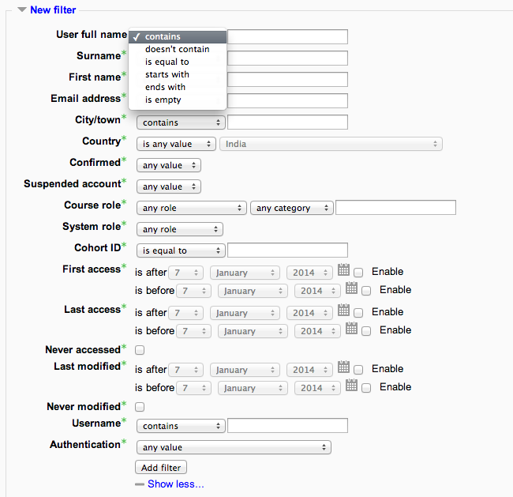
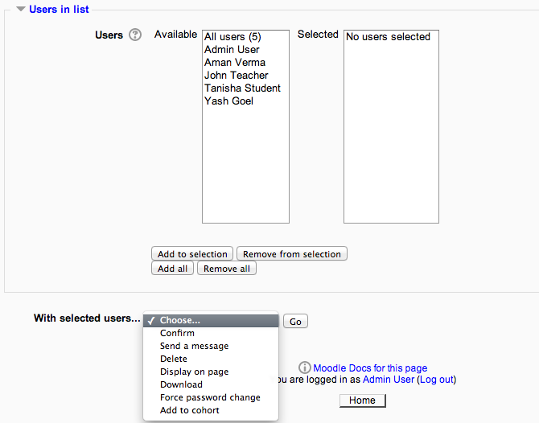

The bulk user actions feature in Settings > Site administration > Users > Accounts > Bulk user actions enables administrators to select users by creating a filter and then perform any of the following actions:

- Confirm user accounts created through Email-based self-registration which are not yet confirmed by the user
- Send a message (requires Messaging to be enabled)
- Delete user accounts
- Display a list of users on a page
- Download user data in text, ODS or Excel file format
- Force users to change their passwords
- Add users to a cohort
To perform a bulk user action

- If you know them, choose your users from the available list or else click Show Advanced to create a filter.
- Users can be filtered according to full name, surname, first name, email address, city/town, country, confirmed, first access, last access, last login, username, authentication. (Screenshot 1 below)
- If you have set a custom profile field, this is available too from the “Profile” dropdown box (Screenshot 2 below)
- Select users from the list.
- Choose an action from the dropdown menu (Screenshot 3 below)
- Click the Add filter button.
- Select in the box on the left those users you require and move them to the box on the right.
- From the dropdown box With selected users, choose the action you wish to perform and then click Go.